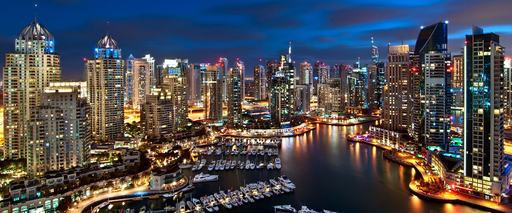

Dubai

Itinerary
Day 1: Sightseeing
Whether you're in Dubai for the first time or you're a repeat visitor, there is so much to see in this populous emirate that you'll discover something new each time. Since you may want to spend your first day getting your bearings, this is the best time to tour the city.
Booking a tour with one of the many touring companies is a great way to acclimatize yourself to your surroundings. Enjoy a hop-on, hop-off bus tour, a luxurious dinner cruise, or rent a car so you can explore the city yourself.
You'll definitely want to buy a ticket to the top of Burj Khalifa for a bird's eye view of the skyline. This landmark building is Dubai's tallest at 829.8 m, and it boasts a world-famous observation deck on the 124th floor that is not to be missed.
Sightseeing
Handy Hint - It is highly recommended that you pre-book your Burj Khalifa experience as far in advance as possible (especially for weekend visits) as this is a very popular attraction. Tickets can be pre-booked from the Burj Khalifa website.
Day 2: Museums and Heritage Sites
Dubai has so many museums that it would take more than a week to see them all, but setting aside one day to visit the ones you're most interested in isn't a bad idea. You may want to start with the Dubai Museum, the emirate's main museum, which is located at the oldest existing building in the city: the Al Fahidi Fort.
This museum houses old Dubai maps, local antiquities, Asian and African artifacts, and emirate documents. You'll also experience depictions of desert life, including a Bedouin tent, a model mosque, and sea-faring collections.
Museum and heritage
Other sites you won't want to miss include the Emirates National Auto Museum, the Antiques Museum, Heritage House, the Sheikh Mohammed Centre for Cultural Understanding, and Hatta Heritage Village.
Day 3: Adventures
Dubai offers plenty of opportunities for sports and adventure, from camel racing to car rallying in the sand dunes, there’s something on offer for everyone. The United Arab Emirates is home to some of the best resorts in the world where families of all ages can enjoy horseback riding in the desert, laser shooting, and even archery.
Adventures
Adventurous types can test their rock climbing skills or unwind on a jet ski.
Day 4: Unique Shopping
The shopping malls in Dubai are dramatically different to those in Paris or New York and the experience is one-of-a-kind. We've already mentioned the Mall of Emirates with its indoor ski slope, but that's just the tip of the iceberg. Souk Madinat, for instance, located inside the Madinat Jumeirah Hotel, features a unique waterway that transfers shoppers from restaurants and shops to nearby hotels.
Unique shopping
Handy Hint - Make sure you don’t miss out on the Dubai Summer Surprises, one of the most anticipated shopping events of the year. Dubai Summer Surprises starts in June and has a host of internationally-acclaimed shows for the family, concerts, exhibitions and other live events. Dubai Summer Surprises also offers special promotions, huge discounts, and raffles.
Day 5: Views from Above
Dubai features unique architecture that isn't always best appreciated from the ground. Palm Jumeirah, for instance, is a man-made island designed to look like a palm tree enclosed in a semicircle from above. The best way to see this kind of modern ingenuity is to take a helicopter tour. Sit back and relax in luxury while getting the best views of Palm Jumeirah, Burj Al Arab, Burj Khalifa, and countless other icons.
Views from above
If you're feeling adventurous, book a skydive at one of the most unique drop zones in the world. Opt for a tandem jump that has you harnessed to a professional if you'd rather not go it alone.